Un sistema,
muchas formas.
La biblioteca visual de Tableros. Objetos satinados, cristal esmerilado y geometrías conectadas. Cada pieza tiene un lugar; la productividad sigue al frente.
11 renders transparentes · 16 portadas · 8 símbolos de proyecto · 5 patrones · Familia de marcaObjetos 3D

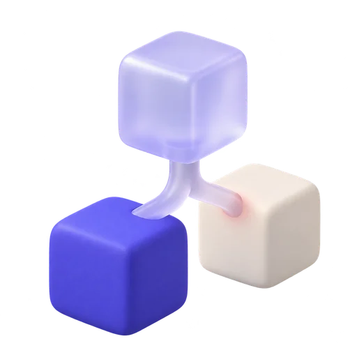

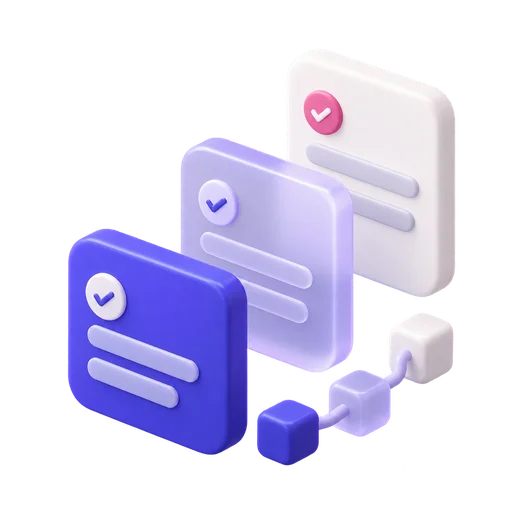

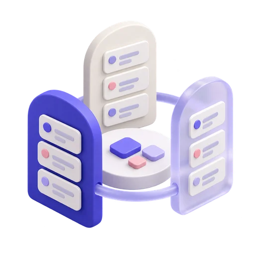

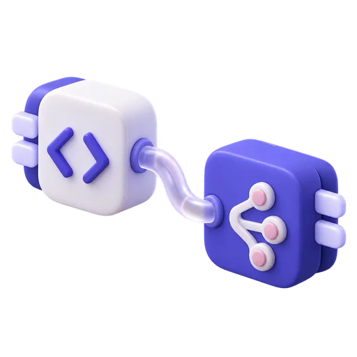

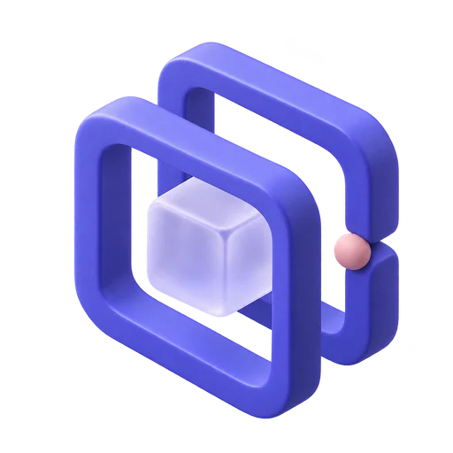

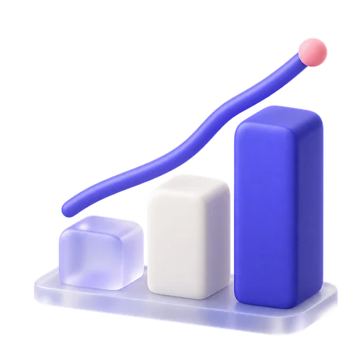

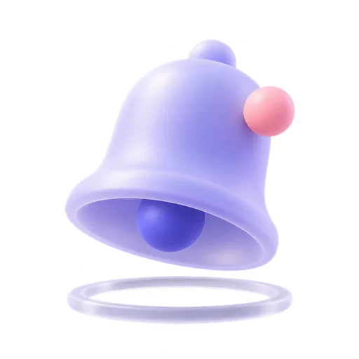


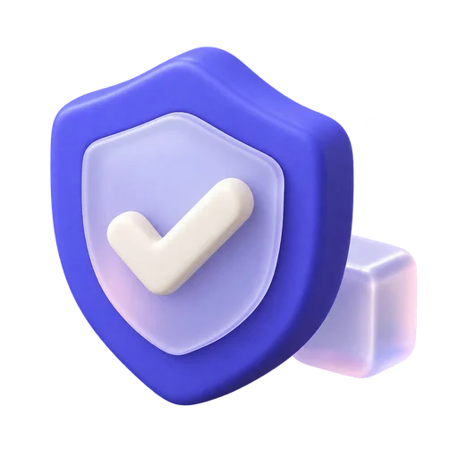

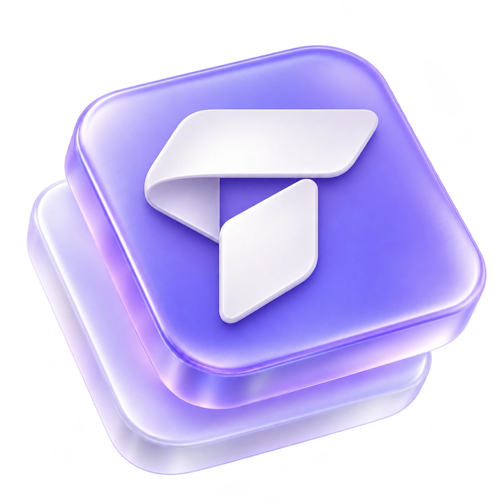

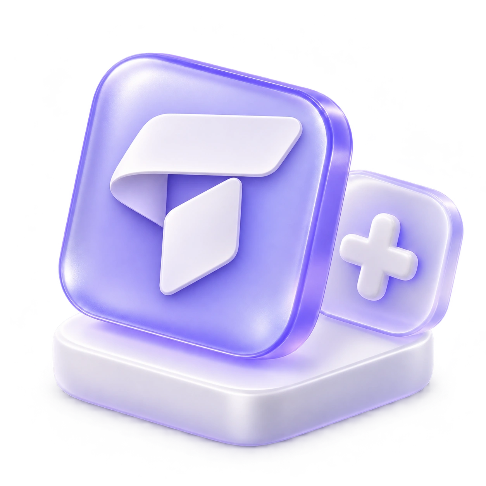
Portadas de proyecto
Ocho diseños en claro y oscuro. Recursos opcionales preparados para futuras portadas, sin fondos detrás de las columnas Kanban.







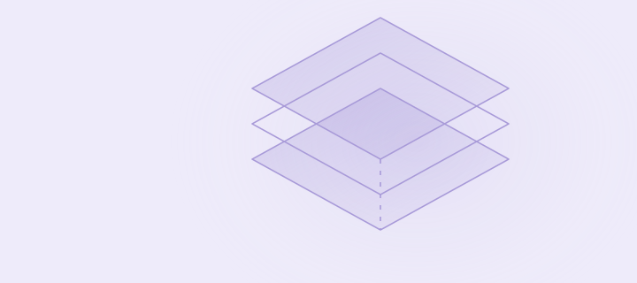

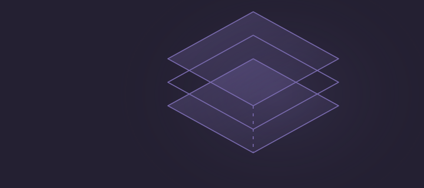








